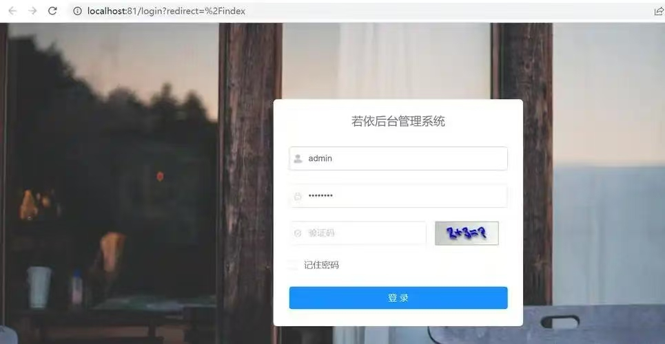
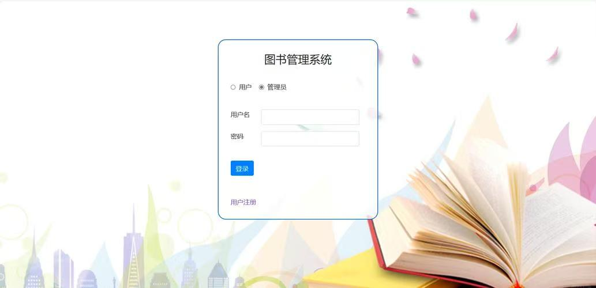

求职意向：后端开发工程师（Java方向）
东北石油大学计算机科学与技术专业本科在读，专注后端开发方向，具备C#、Java双语言开发基础， 独立完成“图书馆管理系统（C#）”“SpringBoot权限管理系统”2个后端项目，掌握数据库设计、接口开发、 权限控制等核心技能。同时具备安全测试基础，能从“安全视角”优化后端代码，适合后端开发、全栈开发（基础）岗位。
技术栈：SpringBoot+MyBatis+MySQL+JWT
核心职责： 1. 设计用户-角色-权限三级权限模型，完成数据库表结构（user/role/menu表）的设计与建表； 2. 开发用户登录接口（JWT生成Token）、权限校验拦截器，实现“不同角色访问不同接口”的控制； 3. 编写接口文档，配合前端完成联调，修复接口参数格式、数据返回异常等问题12处。
成果：实现5个核心接口，完成基础权限控制功能，支持100+用户的权限分配。
技术栈：C# WinForm+SQL Server
核心职责： 1. 完成“书籍管理、借阅管理、用户管理”3个模块的后端逻辑开发； 2. 设计借阅超时计算、书籍库存校验等业务逻辑，编写SQL语句实现数据的增删改查； 3. 测试并修复“借阅超期未提醒”“库存负数”等业务bug8处。
成果：实现图书馆日常管理的核心功能，支持200+书籍、50+用户的信息维护。
技术栈：Kali Linux+SQLMap+Nessus
核心职责： 1. 对自己开发的SpringBoot系统进行安全测试，使用SQLMap识别出1处SQL注入风险； 2. 优化后端代码（添加参数校验、使用预编译SQL），修复该漏洞； 3. 编写《后端安全开发规范》笔记，涵盖“SQL注入、XSS攻击”的防御方法。
成果：提升后端代码的安全性，形成可复用的安全开发规范。
Java（SpringBoot、MyBatis）、C#（WinForm），能独立完成后端接口开发、业务逻辑编写。
MySQL、SQL Server，掌握数据库设计（三范式）、SQL语句编写、索引基础优化。
IDEA、Visual Studio、Postman（接口测试）、Git（版本管理基础）、JWT（权限认证）。
需求分析、接口文档编写、前后端联调、基础安全开发、bug定位与修复。
今天开发权限拦截器时，遇到“Token过期后接口返回异常”的问题，通过添加全局异常处理器，统一返回“Token失效”提示，同时优化了拦截器的执行顺序，确保权限校验在接口逻辑之前执行。
图书馆系统的“借阅”操作需要同时修改“书籍库存”和“借阅记录”，之前未加事务导致“库存减少但记录未插入”的问题，通过添加SQL Server事务，确保两个操作要么同时成功、要么同时回滚，解决了数据不一致的bug。